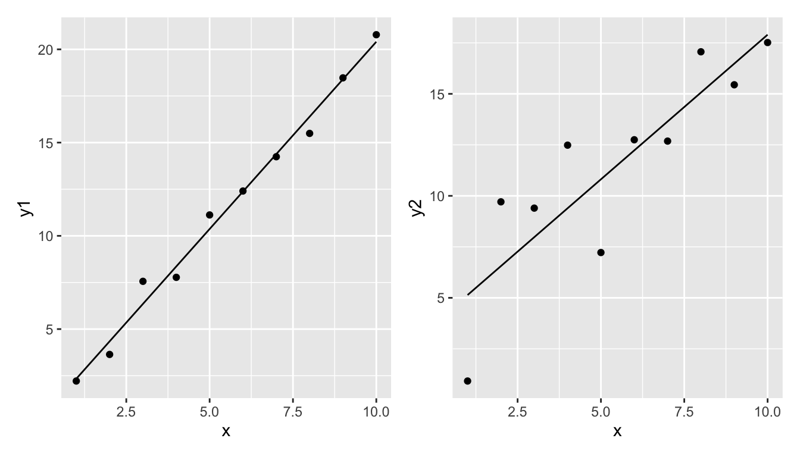
Regression Part 2 (L4)
Introduction
This chapter builds on the previous chapter on simple linear regression. There we learned how to fit a regression model to data, and how to check if the assumptions of the regression model are met. When we are satisfied that the assumptions of linear regression are adequately met, we can move on to the next stage: interpreting the model and using it to answer our biological question.
Interpretation of the model means two main things in simple regression:
- Is there a statistically significant relationship between the response and explanatory variable?
- Does the model provide a good (or not so good) explanation of the variation in the response variable?
And there are couple of tools useful for communicating and visualising the uncertainty in the regression model, such as confidence interval, confidence bands, and prediction bands.
So, in this chapter, we cover:
- How to measure how good is the regression (\(R^2\)).
- Testing if relationship is statistically significant (i.e., if the slope is significantly different from zero).
- What is the confidence interval of the slope.
- What is the the confidence band of the regression line.
- What is the prediction band of the regression line.
How good is the regression model (\(R^2\))?
What would a good regression model look like? What would a bad one look like? One could say that a good regression model is one that explains a lot the variability in the response variable. But what could we mean by “variability in the response variable” and “explains a lot”?
Take these two examples.
The left regression model seems to fit the data relatively well. The regression line is quite close to the data points.
The right regression model does not fit the data well. The regression line is quite far from the data points.
But how can we quantify this?
Let’s say that we will measure the goodness of the model by the proportion of variability of the response variable that is explained by the explanatory variable. To do this we need to do the following:
- Measure the total variability of the response variable (total sum of squares, \(SST\)).
- Measure the amount of variability of the response variable that is explained by the explanatory variable (model sum of squares, \(SSM\)).
- Measure the variability of the response variable that is not explained by the explanatory variable (error sum of squares, \(SSE\)).
- Calculate the proportion of variability of the response variable that is explained by the explanatory variable (\(R^2\), pronounced as “r-squared”) (also known as the coefficient of determination) (\(R^2\) = \(SSM/SST\)).
Importantly, note that we will calculate \(SSM\) and \(SSE\) so that they sum up to \(SST\). I.e., \(SST = SSM + SSE\). That is, the total variability is the sum of what is explained by the model and what remains unexplained.
Let’s take each in turn:
\(SST\)
1. The total variability of the response variable is the sum of the squared differences between the response variable and its mean. This is called the total sum of squares (\(SST\)).
\[SST = \sum_{i=1}^{n} (y_i - \bar{y})^2\]
where: \(y_i\) is the response variable, \(\bar{y}\) is the mean of the response variable, \(n\) is the number of observations.
Note that sometimes \(SST\) is referred to as \(SSY\) (sum of squares of \(y\)).
Graphically, this is the sum of the square of the blue residuals as shown in the following graph, where the horizontal dashed line is at the value of the mean of the response variable.
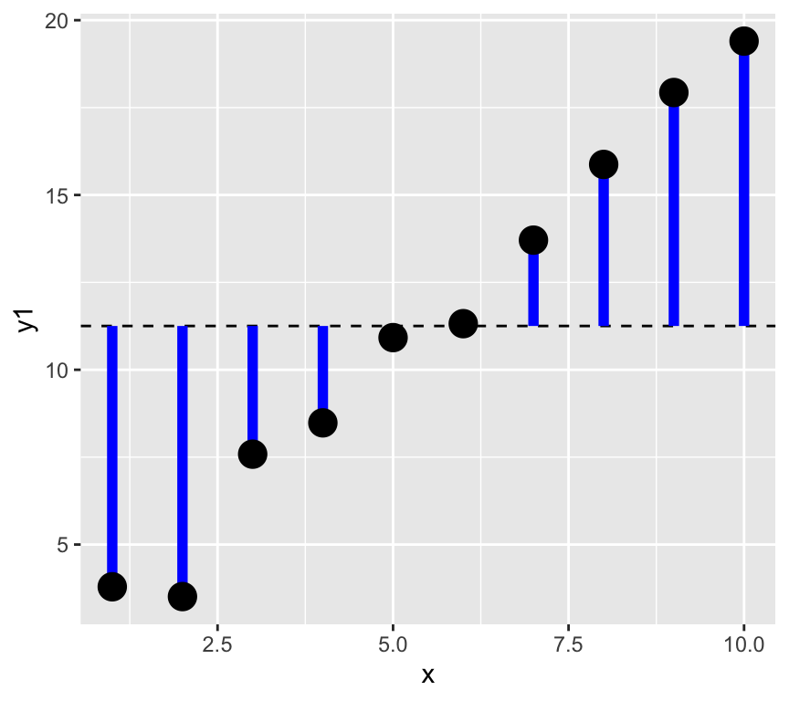
We can calculate this in R as follows:
SST <- sum((y1 - mean(y1))^2)SSM and SSE
Now the next two steps, that is getting the model sum of squares (SSM) and the error sum of squares (SSE) are a bit more complicated. To do this we need to fit a regression model to the data. Let’s see this graphically, and divide the data into the explained and unexplained parts.
Make a graph with vertical lines connecting the data to the mean of the data, but with each line two parts, one from the mean to the data, and one from the data to the predicted value.
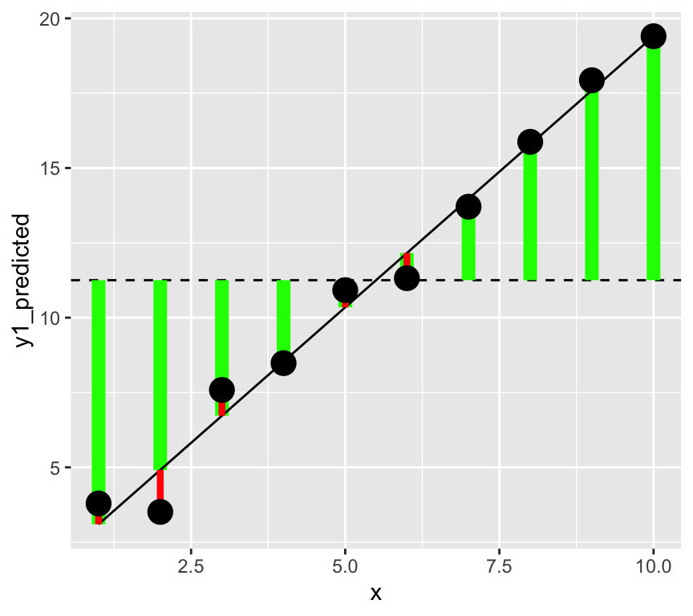
In this graph, the square of the length of the green lines is the model sum of squares (\(SSM\)). The square of the length of the red lines is the error sum of squares (\(SSE\)).
In a better model the length of the green lines will be longer (the square of these gives the \(SMM\), the variability explained by the model). And the length of the red lines will be shorter (the square of these gives the \(SSE\), the variability not explained by the model).
\(SSM\)
Next we will do the second step, that is calculate the model sum of squares (\(SSM\)).
2. The amount of variability of the response variable that is explained by the explanatory variable is called the model sum of squares (\(SSM\)).
This is the difference between the predicted value of the response variable and the mean of the response variable, squared and summed:
\[SSM = \sum_{i=1}^{n} (\hat{y}_i - \bar{y})^2\]
where: \(\hat{y}_i\) is the predicted value of the response variable,
In R, we calculate this as follows:
m1 <- lm(y1 ~ x)
y1_predicted <- predict(m1)
SSM <- sum((y1_predicted - mean(y1))^2)
SSM[1] 292.486\(SSE\)
Third, we calculate the error sum of squares (\(SSE\)) with either of two methods. We could calculate it as the sum of the squared residuals, or as the difference between the total sum of squares and the model sum of squares:
\[SSE = \sum_{i=1}^{n} (y_i - \hat{y}_i)^2 = SST - SSM\] Let’s calculate this in R uses both approaches:
SSE <- sum((y1 - y1_predicted)^2)
SSE[1] 7.776864Or…
SSE <- SST - SSM
SSE[1] 7.776864\(R^2\)
Finally, we calculate the proportion of variability of the response variable that is explained by the explanatory variable (\(R^2\)):
\[R^2 = \frac{SSM}{SST}\]
R.squared <- SSM/SST
R.squared[1] 0.9740998Is my R squared high (or low)?
What value of \(R^2\) is considered good? In ecological research, \(R^2\) values are often low (less than 0.3), because ecological systems are complex and many factors influence the response variable. However, in other fields, such as physiology, \(R^2\) values are often higher. Therefore, the answer of what values of \(R^2\) are good depends on the field of research.
Here are the four examples and their r-squared.
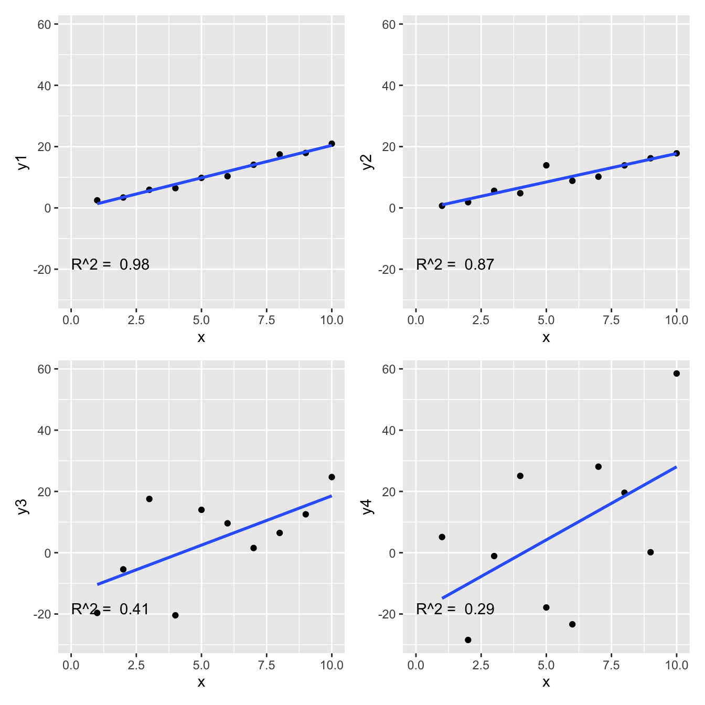
Where is the \(R^2\) value in the regression output?
Using the blood pressure data, we can fit a regression model and look at the output. We use the summary function to get the regression output, and we can see that the \(R^2\) value is given in the output. Look for “Multiple R-squared” in the output, which is the \(R^2\) value of the model.
Call:
lm(formula = Systolic_BP ~ Age, data = bp_data)
Residuals:
Min 1Q Median 3Q Max
-13.2195 -3.4434 -0.0808 3.1383 12.6025
Coefficients:
Estimate Std. Error t value Pr(>|t|)
(Intercept) 98.96874 1.46102 67.74 <2e-16 ***
Age 0.82407 0.02771 29.74 <2e-16 ***
---
Signif. codes: 0 '***' 0.001 '**' 0.01 '*' 0.05 '.' 0.1 ' ' 1
Residual standard error: 4.971 on 98 degrees of freedom
Multiple R-squared: 0.9002, Adjusted R-squared: 0.8992
F-statistic: 884.4 on 1 and 98 DF, p-value: < 2.2e-16The value is 0.9, which means that the model explains about 90% of the variability in the response variable (systolic blood pressure).
Is the relationship statistically significant?
A common question is “Is there a relationship between the response and explanatory variable?” Or, more formally, “Is the slope of the regression line significantly different from zero?”
We often hear this expressed as “is the relationship statistically significant?” And maybe we heard that the relationship is significant if the p-value is less than 0.05. But what does all this actually mean? In this section we’ll figure all this out. The first step to is to formulate a null hypothesis.
The null hypothesis
What is a meaningful null hypothesis for a regression model?
As mentioned, often we’re interested in whether there is a relationship between the dependent (response) and independent (explanatory) variable. Therefore, the null hypothesis is that there is no relationship between the response and explanatory variable. This means that the null hypothesis is that the slope of the regression line is zero.
Recall the regression model: \[y = \beta_0 + \beta_1 x + \epsilon\]
The null hypothesis is that the slope of the regression line is zero: \[H_0: \beta_1 = 0\]
What is the alternative hypothesis?
\[H_1: \beta_1 \neq 0\]
So, how do we test the null hypothesis? We are going to calculate the probability of observing the data we have, given that the null hypothesis is true. If this probability is very low, then we can reject the null hypothesis.
Note
We never prove the null hypothesis is true. Instead, we calculate the probability of observing our data given that the null hypothesis is true. If this probability is very low, we reject the null hypothesis.
To calculation this probability we use the fact that the slope of the regression line is an estimate and this estimate has uncertainty associated with it.
We can see that the slope estimate (the \(x\) row) has uncertainty by looking at the regression output:
summary(m1)$coefficients[1:2, 1:2] Estimate Std. Error
(Intercept) -0.7638353 0.6652233
x 2.1161160 0.1072104We see the estimate of the parameter (slope) and a measure of uncertainty in the estimate: the standard error of the estimate.
The standard error is calculated as:
\[\sigma^{(\beta_1)} = \sqrt{ \frac{\hat\sigma^2}{\sum_{i=1}^n (x_i - \bar x)^2}}\]
Where \(\hat\sigma^2\) is the expected residual variance of the model. This is calculated as:
\[\hat\sigma^2 = \frac{\sum_{i=1}^n (y_i - \hat y_i)^2}{n-2}\]
Where \(\hat y_i\) is the predicted value of \(y_i\) from the regression model, and \(n\) is the number of observations. We divide by \(n-2\) because we have estimated two parameters (the intercept and the slope) from the data.
OK, let’s take a look at this intuitively. We have the estimate of the slope and the standard error of the estimate of the slope (when this standard error is larger, we are less certain about the estimate).
Here is an empty graph of the value of the slope estimate versus the standard error of the estimate:
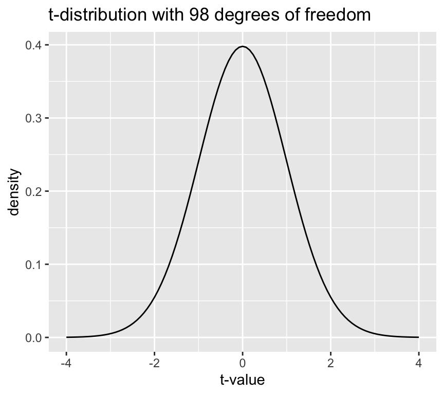
Have a careful think about what combinations of slope estimate value and standard error value are more likely to have been observed by chance, and which combinations are less likely to have been observed by chance. Draw a copy of the graph and label areas where the slope estimate is more likely to have been observed by chance, and areas where it is less likely to have been observed by chance. (The answer is at the end of this chapter, so think about it before you look at the answer).
When the slope estimate is larger, it is less likely to have been observed by chance. And when the standard error is larger, it is more likely to have been observed by chance. How can we put these together into a single measure?
The \(t\)-statistic
If we divide the slope estimate by the standard error, we get a measure of how many standard errors the slope estimate is from the null hypothesis slope of zero. This is the \(t\)-statistic:
\[t = \frac{\hat\beta_1 - \beta_{1,H_0}}{\sigma^{(\beta_1)}}\]
Where \(\beta_{1,H_0}\) is the null hypothesis value of the slope, usually zero, so that
\[t = \frac{\hat\beta_1}{\sigma^{(\beta_1)}}\]
The \(t\)-statistic is a measure of how many standard errors the slope estimate is from the null hypothesis value of the slope. The larger the \(t\)-statistic, the less likely the slope estimate was observed by chance.
The p-value
Recap: Formal definition of the \(p\)-value
The formal definition of \(p\)-value is the probability to observe a data summary that is at least as extreme as the one observed, given that the null hypothesis is correct.
When performing a \(t\)-test, the data summary is the value of the \(t\)-statistic. Therefore, the \(p\)-value is the probability of observing a value of the \(t\)-statistic at least as extreme as the one observed, given that the null hypothesis is correct.
But how can we calculate the \(p\)-value from the \(t\)-statistic? The answer is to use the \(t\)-distribution, which quantifies the probability of observing a value of the \(t\)-statistic under the null hypothesis.
But what is the \(t\)-distribution? It is a distribution of the \(t\)-statistic under the null hypothesis. It is a bell-shaped distribution that is centered on zero. The shape of the distribution is determined by the degrees of freedom, which is \(n-2\) for a simple linear regression model.
Here is the distribution of \(t\) values under the null hypothesis for a sample size of 100 (i.e., 98 degrees of freedom):
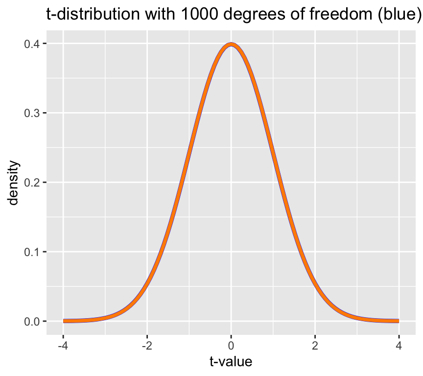
The height of the line is the “density” and not a probability. The probability of observing a value of the \(t\)-statistic in a given range is the area under the curve of the \(t\)-distribution in that range. The area under the curve of the \(t\)-distribution is equal to 1, which means that the total probability of observing a value of the \(t\)-statistic is 1.
Tip
By the way, it is named the \(t\)-distribution by it’s developer, William Sealy Gosset, who worked for the Guinness brewery in Dublin, Ireland. In his 1908 paper, Gosset introduced the \(t\)-distribution but he didn’t explicitly explain his choice of the letter \(t\). The choice of the letter \(t\) could be to indicate “Test”, as the \(t\)-distribution was developed specifically for hypothesis testing.
Now, recall that the p-value is the probability of observing the value of the test statistic (so here the \(t\)-statistic) at least as extreme as the one we have, given the null hypothesis is true. We can calculate this probability by integrating the \(t\)-distribution from the observed \(t\)-statistic to the tails of the distribution.
Let’s see this graphically. Say we have an observed \(t\)-statistic of 1.5. The p-value is the area under the curve of the \(t\)-distribution in the tails beyond 1.5 and -1.5 (more extreme means both less than or greater than). Graphically this looks like:
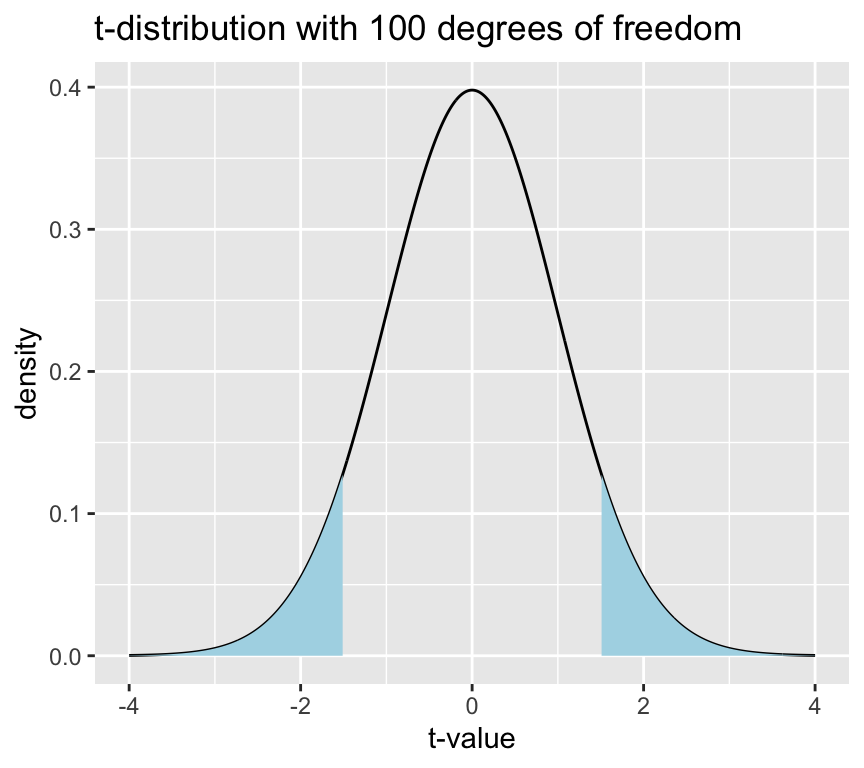
This blue area is the \(p\)-value, which is the probability of observing a value of the \(t\)-statistic at least as extreme as 1.5, given that the null hypothesis is true.
This area (p-value) can be calculated using the cumulative distribution function of the \(t\)-distribution.
t_value <- 1.5
p_value <- 2 * pt(-abs(t_value), df = n - 2)
p_value[1] 0.1368292So, with a \(t\)-statistic of 1.5, and 98 degrees of freedom, the p-value is 0.14, which means that there is a 0.14 probability of observing a value of the \(t\)-statistic at least as extreme as 1.5, given that the null hypothesis is true.
Often we say that there is “statistically significant evidence” for a relationship between the response and explanatory variable if the p-value is less than 0.05. This means that if the p-value is less than 0.05, we reject the null hypothesis of no relationship between the response and explanatory variable.
Let’s do the same graph and calculation for a \(t\)-statistic of 2.5:
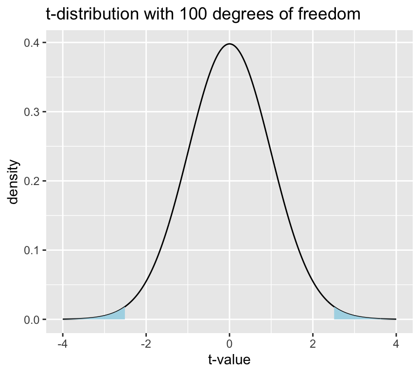
With the larger \(t\)-statistic the blue areas are smaller, which means that the p-value is smaller.
t_value <- 2.5
p_value <- 2 * pt(-abs(t_value), df = n - 2)
p_value[1] 0.01407976The p-value is 0.01, which means that there is a 0.01 probability of observing a value of the \(t\)-statistic at least as extreme as 2.5, given that the null hypothesis is true. Therefore, we reject the null hypothesis of no relationship between the response and explanatory variable.
Where is the \(p\)-value in the regression output?
Using the blood pressure data again, we can fit a regression model and look at the output. We use the summary function to get the regression output.
summary(mod1)
Call:
lm(formula = Systolic_BP ~ Age, data = bp_data)
Residuals:
Min 1Q Median 3Q Max
-13.2195 -3.4434 -0.0808 3.1383 12.6025
Coefficients:
Estimate Std. Error t value Pr(>|t|)
(Intercept) 98.96874 1.46102 67.74 <2e-16 ***
Age 0.82407 0.02771 29.74 <2e-16 ***
---
Signif. codes: 0 '***' 0.001 '**' 0.01 '*' 0.05 '.' 0.1 ' ' 1
Residual standard error: 4.971 on 98 degrees of freedom
Multiple R-squared: 0.9002, Adjusted R-squared: 0.8992
F-statistic: 884.4 on 1 and 98 DF, p-value: < 2.2e-16In the coefficients table, look for the row corresponding to the slope (the second row, which is the “Age” row). In this row we see the estimate of the slope, the standard error of the slope, the \(t\)-value for the slope,and in the last column “Pr(>|t|)”. This means “the probability of observing a value of the \(t\)-statistic at least as extreme as the one observed, given that the null hypothesis is true”.
Note
The vertical bars around t indicate that we are looking at the absolute value of the \(t\)-statistic, which is what we use for a two-tailed test, which is the most common test for the slope of a regression line
Conclusion: there is very strong evidence that the blood pressure is associated with age, because the \(p\)-value is extremely small (thus it is very unlikely that the observed slope value or a large one would be seen if there was really no association). Thus, we can reject the null hypothesis that the slope is zero.
A cautionary note on the use of \(p\)-values
Maybe you have seen that in statistical testing, often the criterion \(p\leq 0.05\) is used to test whether \(H_0\) should be rejected. This is often done in a black-or-white manner. However, we will put a lot of attention to a more reasonable and cautionary interpretation of \(p\)-values in this course!
Confidence interval of slope
The actual value of the slope has practical meaning. The slope of the regression line tells us how much the response variable changes when the explanatory variable changes by one unit. The slope is one measure of the strength of the relationship between the two variables.
We can ask what values of a parameter estimate are compatible with the data (confidence intervals)? To answer this question, we can determine the confidence intervals of the regression parameters.
The confidence interval of a parameter estimate is defined as the interval that contains the true parameter value with a certain probability. So the 95% confidence interval of the slope is the interval that contains the true slope with a probability of 95%.
We can then imagine two cases. The 95% confidence interval of the slope includes 0:
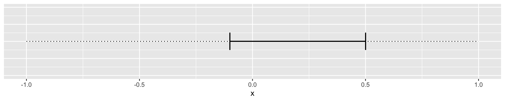
Or where the confidence interval does not include zero:
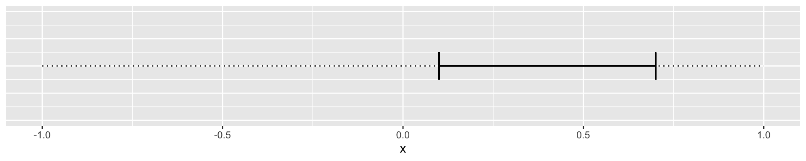
How do we calculate the lower and upper limits of the 95% confidence interval of the slope?
Recall that the \(t\)-value for a null hypothesis of slope of zero is defined as:
\[t = \frac{\hat\beta_1}{\hat\sigma^{(\beta_1)}}\]
The first step is to calculate the \(t\)-value that corresponds to a p-value of 0.05. This is the \(t\)-value that corresponds to the 97.5% quantile of the \(t\)-distribution with \(n-2\) degrees of freedom.
\(t_{0.975} = t_{0.025} = 1.96\), for large \(n\).
The 95% confidence interval of the slope is then given by:
\[\hat\beta_1 \pm t_{0.975} \cdot \hat\sigma^{(\beta_1)}\]
In our blood pressure example the estimated slope is 0.8240678 and the standard error of the slope is 0.0277096. We can calculate the 95% confidence interval of the slope in R as follows:
n <- 100
t_0975 <- qt(0.975, df = n - 2)
half_interval <- t_0975 * summary(mod1)$coef[2,2]
lower_limit <- coef(mod1)[2] - half_interval
upper_limit <- coef(mod1)[2] + half_interval
ci_slope <- c(lower_limit, upper_limit)
slope <- coef(mod1)[2]
slope Age
0.8240678 ci_slope Age Age
0.7690791 0.8790565 Or, using the confint function:
## 95% confidence interval of the slope of mod1
ci_slope_2 <- confint(mod1, level=c(0.95))[2,]
ci_slope_2 2.5 % 97.5 %
0.7690791 0.8790565 Or we can do it using values from the coefficients table:
coefs <- summary(mod1)$coef
beta <- coefs[2,1]
sdbeta <- coefs[2,2]
beta + c(-1,1) * qt(0.975,241) * sdbeta [1] 0.7694840 0.8786516Interpretation: for an increase in the age by one year, roughly 0.82 mmHg increase in blood pressure is expected, and all true values for \(\beta_1\) between 0.77 and 0.88 are compatible with the observed data.
Confidence band
If another sample from the same population was taken, the regression line would look slightly different. But how different? And where could we expect the regression line to be if we took another sample from the same population? The confidence band is an illustration of the region in which the regression line could lie if we took another sample from the same population. A confidence band is always specified with a confidence level, such as 95%.
Lets look at this in a graph of our blood pressure data. The black line is the regression line fitted to the data. The purple line is the confidence band for the expected values of \(y\) (systolic blood pressure) for each value of \(x\) (age). The shaded area around the purple line is the 95% confidence band for the expected values of \(y\).
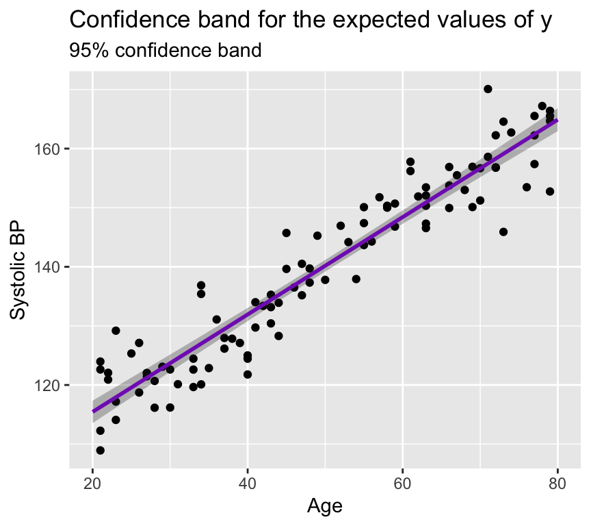
The confidence band is narrow here because the estimates of the slope and intercept are precise (the standard errors of the slope and intercept are small). The confidence band is (slightly) wider at the edges of the graph because there are fewer data points at the edges, which means that the estimates of the slope and intercept are less precise at the edges.
We can view this in a different way. Let us plot regression lines that are consistent with the estimated slope and intercept, given their standard errors.
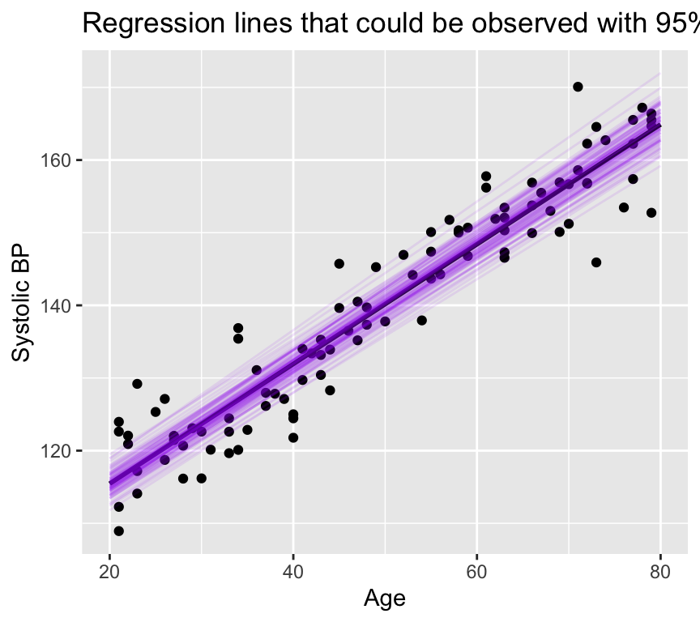
None of these lines has a slope any where near zero! And all are closely grouped around the estimated regression line. Note that this is a different way of visualising the confidence in the slope, and is not commonly used. Most people would just plot the 95% confidence band.
The details of how to calculate a confidence band are not required for this course. If you would like to see them, please look in the Extras section below.
Note: For the confidence band, only the uncertainty in the estimates \(\hat\beta_0\) and \(\hat\beta_1\) matters.
Prediction band
The prediction band is rarely used, but it is important to understand the difference between a confidence band and a prediction band. As seen above, the confidence band is where expected values of \(y\) lie. This means that we only account for the uncertainty in the estimates of the slope and intercept.
The prediction band is where future observations of \(y\) lie. This means that we have to account for both the uncertainty in the estimates of the slope and intercept, and the variability of future observations around the predicted value.
That is, we have to consider not only the uncertainty in the predicted value caused by uncertainty in the parameter estimates \(\hat y_0 = \hat\beta_0 + \hat\beta_1 x_0\), but also the error term \(\epsilon_i \sim N(0,\sigma^2)\)}.
If you’d like to learn how to calculate the prediction band, the details are given in the Extras section below. These details are not necessary parts of this course.
The key point is that the standard error of a future observation is larger than the standard error of the predicted value \(\hat y_0\) because it includes an additional term that accounts for the variability of future observations around the predicted value.
Here’s a graph showing the prediction band in green for the blood pressure data (with the confidence band in purple):
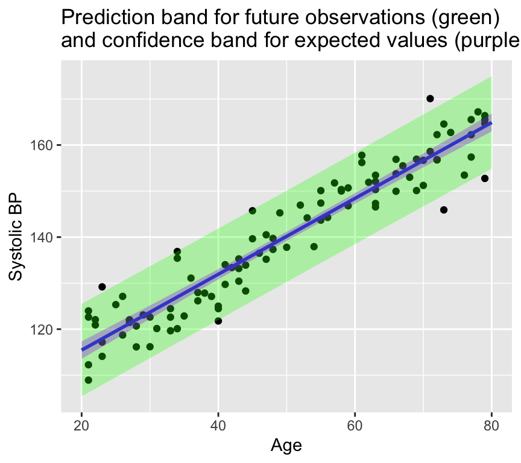
Another way to think of the 95% confidence band is that it is where we would expect 95% of the regression lines to lie if we were to collect many samples from the same population. The 95% prediction band is where we would expect 95% of the future observations to lie.
Reporting
A figure is very important part of reporting the results of a regression analysis. A good figure can help to understand the relationship between the response and explanatory variable, and can also help to understand the uncertainty in the estimates of the slope and intercept.
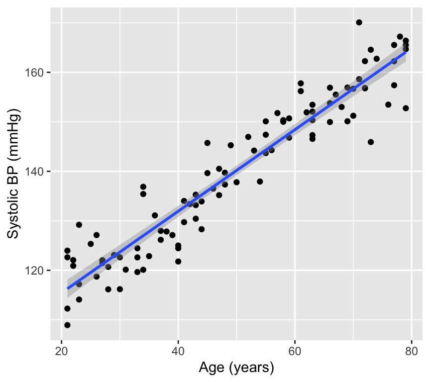
In scientific reports we usually don’t give a graph a title, but rather make a caption that describes the figure. The caption should be informative and should describe what the figure shows. For example, a caption for the above figure could be:
Figure 1. The relationship of systolic blood pressure (mmHg) against age (years) with a fitted regression line (blue) and 95% confidence band for the regression (grey band).
Then in the text of the Results section we would report the results of the regression analysis. For example:
Systolic blood pressure was positively associated with age (slope = 0.82 mmHg per year, 95% confidence interval [0.77, 0.88], degrees of freedom = 98, \(t\) = 29.7, \(p < 0.001\)). The regression model explained 90% of the variability in systolic blood pressure.
We DO NOT report like this:
There was a statistically significant relationship between age and systolic blood pressure (\(p < 0.001\)).
Relationship between \(R^2\) and the \(p\)-value of the slope
Do you think a small \(R^2\) value can be associated with a small \(p\)-value for the slope? Or do you think a large \(R^2\) value can be associated with a large \(p\)-value for the slope?
Actually, we can get a very small \(p\)-value for the slope even when \(R^2\) is very small. This can happen when the sample size is large, because with a large sample size we can get a precise estimate of the slope, which means that the standard error of the slope is small, which means that the \(t\)-statistic is large, which means that the \(p\)-value is small.
Here is an example of a dataset with a very small \(R^2\) value but a very small \(p\)-value for the slope:
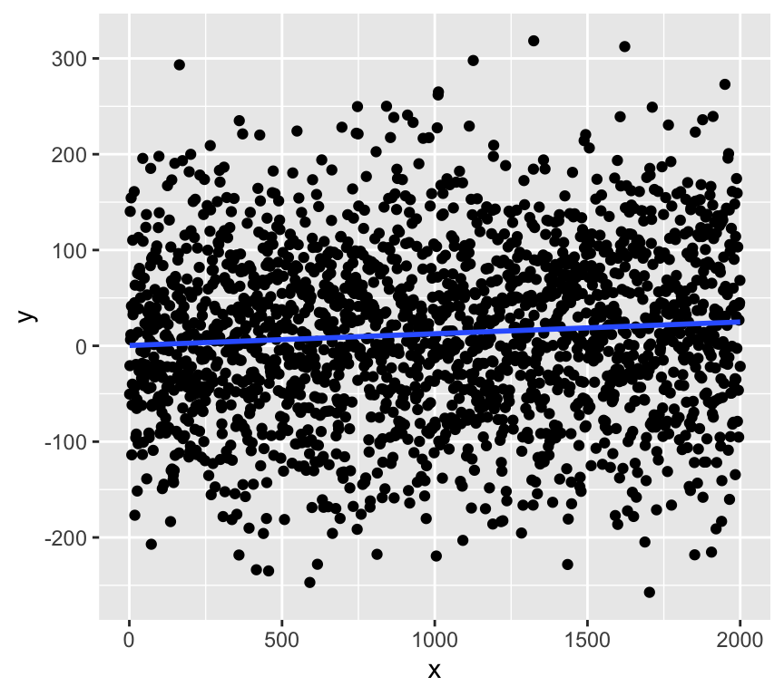
Call:
lm(formula = y ~ x)
Residuals:
Min 1Q Median 3Q Max
-278.540 -60.288 0.443 61.720 301.762
Coefficients:
Estimate Std. Error t value Pr(>|t|)
(Intercept) 0.364568 4.029273 0.090 0.927915
x 0.012271 0.003488 3.518 0.000445 ***
---
Signif. codes: 0 '***' 0.001 '**' 0.01 '*' 0.05 '.' 0.1 ' ' 1
Residual standard error: 90.06 on 1998 degrees of freedom
Multiple R-squared: 0.006156, Adjusted R-squared: 0.005658
F-statistic: 12.38 on 1 and 1998 DF, p-value: 0.0004447The \(R^2\) value is about 0.006, which means that the regression model explains less than only 1% of the variability in \(y\). However, the \(p\)-value for the slope is very small (\(p < 0.001\)), which means that there is strong evidence for a relationship between \(x\) and \(y\)!!!
This is because with a large sample size we can get a precise estimate of the slope, which means that the standard error of the slope is small, which means that the \(t\)-statistic is large, which means that the \(p\)-value is small.
So, beware of interpreting a small \(p\)-value for the slope as evidence of a strong relationship between the response and explanatory variable. A small \(p\)-value for the slope can be observed even when the relationship is very weak (i.e., when \(R^2\) is very small).
Review
That is regression done (at least for our current purposes). Here is a summary of what we have covered:
Previous chapter:
- Why use (linear) regression?
- Fitting the line (= parameter estimation)
- Is linear regression good enough model to use?
- What to do when things go wrong?
- Transformation of variables/the response.
- Handling of outliers.
This chapter:
- Sums of squares: \(SST\), \(SSM\), \(SSE\)
- \(R^2\) as a measure of goodness of fit
- Hypothesis testing in regression
- Null and alternative hypotheses
- t-statistic and p-values
- Confidence intervals
- Confidence and prediction bands
- Reporting
Further reading
Again, there are many good books and online resources about regression models. The same ones as last week are recommended, also for interpreting results of regression models.
- Faraway, J. J. (2016). Linear models with R (2nd ed.). Chapman and Hall/CRC. Link.
- Chapter 7 of The New Statistics with R, by Andy Hector.
Extras
Calculation of confidence bands
Given a fixed value of \(x\), say \(x_0\). The question is:
Where does \(\hat y_0 = \hat\beta_0 + \hat\beta_1 x_0\) lie with a certain confidence (i.e., 95%)?
The first step is to calculate the standard error of \(\hat y_0\):
\[\sigma^{(\hat y_0)} = \hat\sigma \sqrt{ \left( \frac{1}{n} + \frac{(x_0 - \bar x)^2}{\sum_{i=1}^n (x_i - \bar x)^2} \right) }\]
where \(\hat\sigma^2\) is the expected residual variance of the model, calculated as:
\[\hat\sigma^2 = \frac{\sum_{i=1}^n (y_i - \hat y_i)^2}{n-2}\]
Then, we can calculate the confidence interval of \(\hat y_0\) as:
\[\hat y_0 \pm t_{0.975} \cdot \sigma^{(\hat y_0)}\]
Plotting the confidence interval around all \(\hat y_0\) values one obtains the confidence band or confidence band for the expected values of \(y\).
Calculation of the prediction band
The standard error of a future observation is given by:
\[\sigma^{(y_0)} = \hat\sigma \sqrt{ 1 + \left( \frac{1}{n} + \frac{(x_0 - \bar x)^2}{\sum_{i=1}^n (x_i - \bar x)^2} \right) }\]
This is the same as the standard error of the predicted value \(\hat y_0\) but with an additional 1. This is because the standard error of a future observation is the standard error of the predicted value \(\hat y_0\), and this includes the uncertainty in the parameter estimates, plus an additional term that accounts for the variability of future observations around the predicted value. This additional term is what makes the prediction band wider than the confidence band.
The prediction interval of a future observation is then given by:
\[\hat y_0 \pm t_{0.975} \cdot \sigma^{(y_0)}\]
This is the reason why the prediction band is wider than the confidence band.
Randomisation test for the slope of a regression line
Let’s use randomisation as another method to understand how likely we are to observe the data we have, given the null hypothesis is true.
If the null hypothesis is true, we expect no relationship between \(x\) and \(y\). Therefore, we can shuffle the \(y\) values and fit a regression model to the shuffled data. We can repeat this many times and calculate the slope of the regression line each time. This will give us a distribution of slopes we would expect to observe if the null hypothesis is true.
First, we’ll make some data and get the slope of the regression line. Here is the observed slope and relationship:
set.seed(123)
n <- 100
x <- 1:n
y <- 0.1*x + rnorm(n, 0, 10)
m <- lm(y ~ x)
coef(m)[2] x
0.1251108 ggplot(data.frame(x = x, y = y), aes(x = x, y = y)) +
geom_point() +
geom_smooth(method = "lm", se = FALSE, formula = y ~ x) 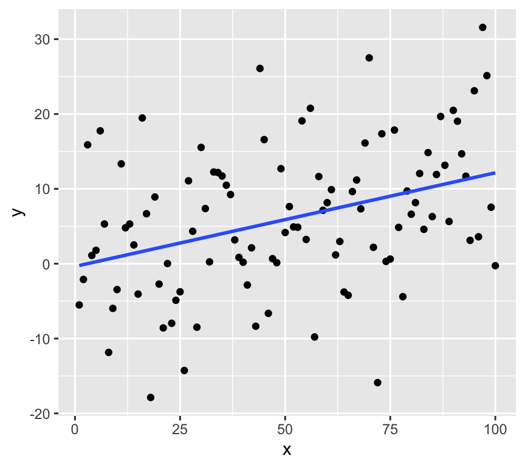
Now we’ll use randomisation to test the null hypothesis. We can create lots of examples where the relationship is expected to have a slope of zero by shuffling randomly the \(y\) values. Here are 20:
par(mfrow = c(5, 4))
for (i in 1:20) {
y_rand <- sample(y)
m_rand <- lm(y_rand ~ x)
plot(x, y_rand, main = paste("Slope = ", round(coef(m_rand)[2], 2)))
abline(m_rand)
}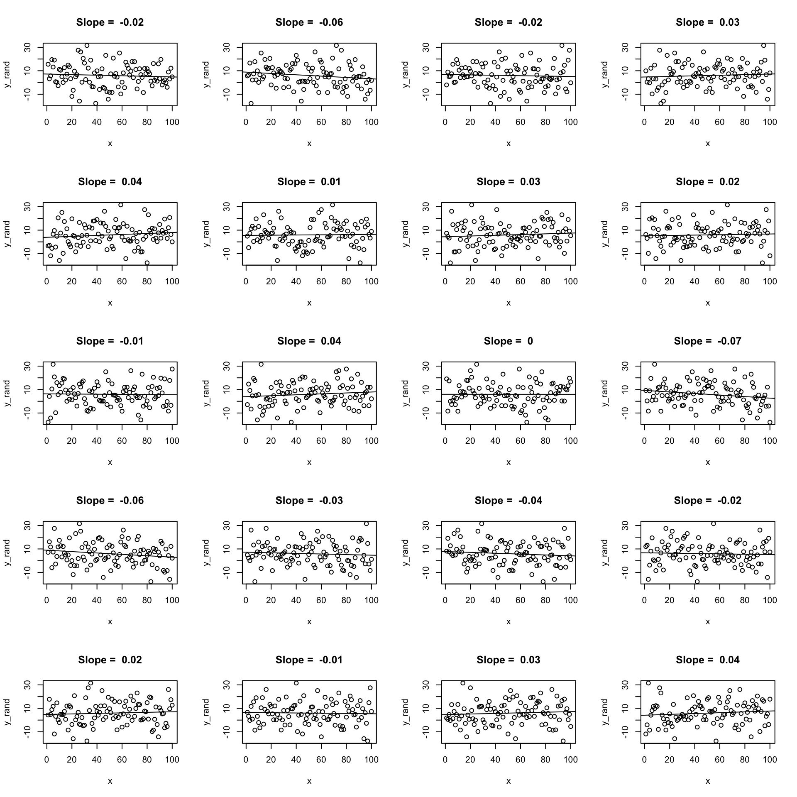
Now let’s create 19 and put the real one in there somewhere random. Here’s a case where the real data has a quite strong relationship:
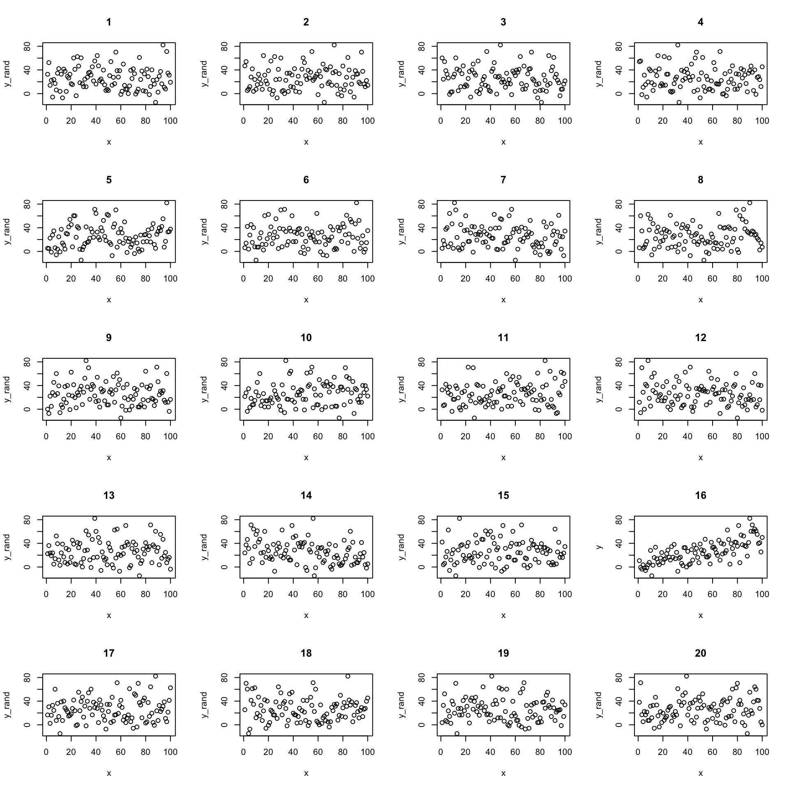
We can confidently find the real data amount the shuffled data. But what if the relationship is weaker?
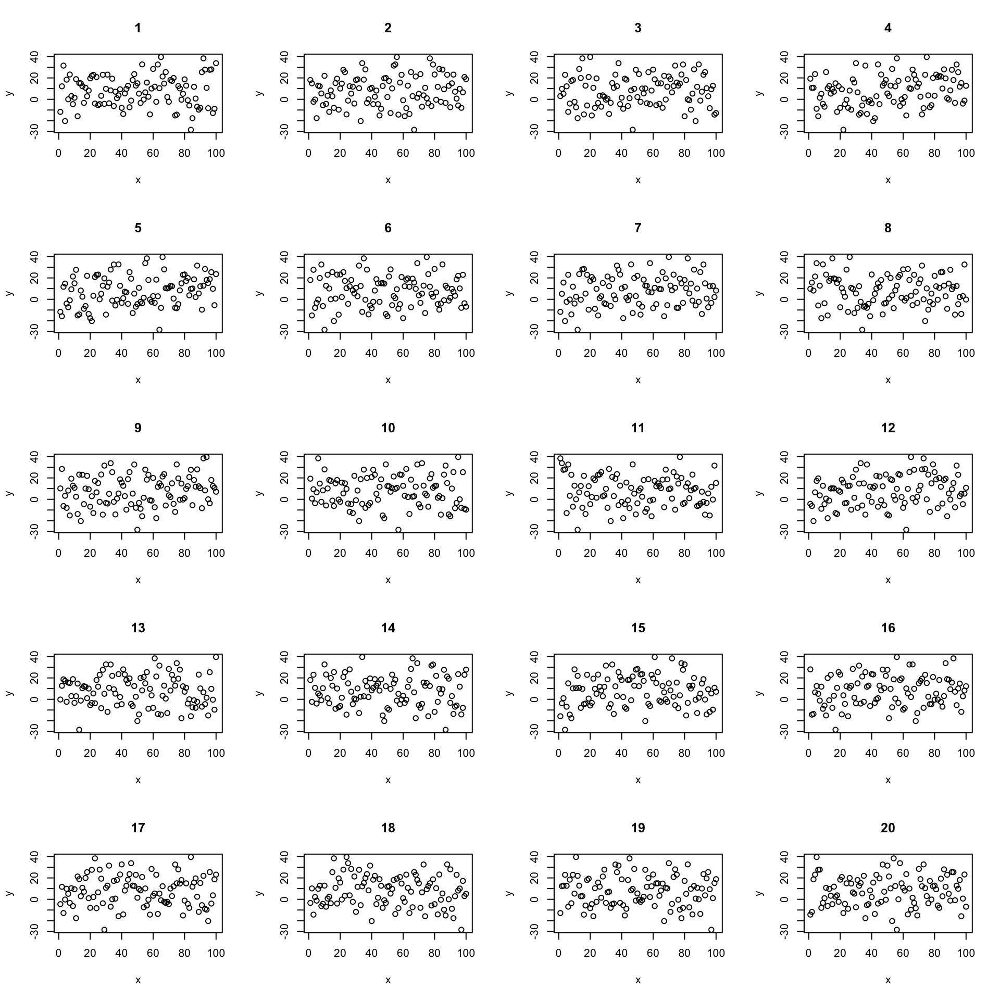
Now its less clear which is the real data. We can use this idea to test the null hypothesis.
We do the same procedure of but instead of just looking at the graphs, we calculate the slope of the regression line each time. This gives us a distribution of slopes we would expect to observe if the null hypothesis is true. We can then see where the observed slope lies in this distribution of null hypothesis slopes.
# repeat 10000 time a randomisation test
y <- 0.15*x + rnorm(n, 0, 15)
rand_slopes <- replicate(10000, {
y_rand <- sample(y)
m_rand <- lm(y_rand ~ x)
coef(m_rand)[2]
})
ggplot(data.frame(slopes = rand_slopes), aes(x = slopes)) +
geom_histogram(bins = 50) +
geom_vline(xintercept = coef(m)[2], color = "red")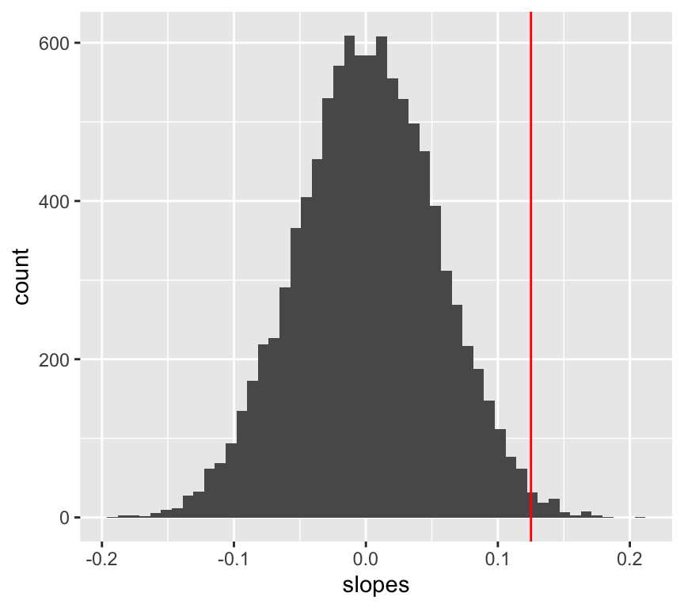
We can now calculate the probability of observing the data we have, given the null hypothesis is true.
p_value <- mean(abs(rand_slopes) >= abs(coef(m)[2]))
p_value[1] 0.0172Visualising p-values for regression slopes
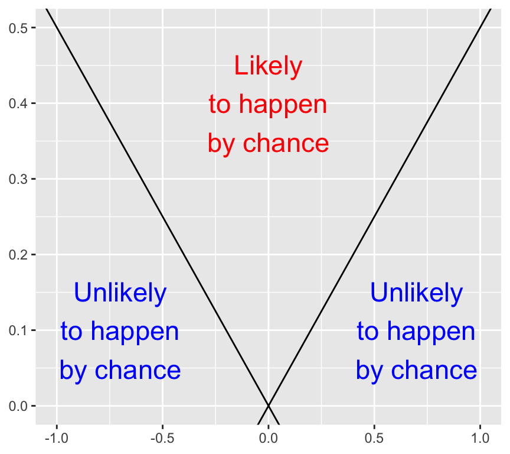